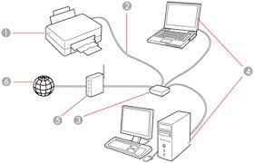

Au cours de ma formation, j’ai appris à configurer différents types d’équipements réseau tels que des routeurs, commutateurs et points d’accès, notamment à travers des environnements professionnels comme Cisco IOS ou des simulateurs tels que Packet Tracer et GNS3. Je maîtrise les concepts essentiels du réseau, incluant le routage statique et dynamique, le VLAN, le spanning-tree, la segmentation réseau, la configuration DHCP/DNS, ainsi que la mise en place de politiques de sécurité de base (ACL, filtrage, NAT).
J’ai également travaillé sur la supervision et le diagnostic réseau, ce qui m’a permis de développer une approche méthodique pour analyser des problèmes, optimiser des performances et assurer la fiabilité d’une infrastructure. Mon profil polyvalent, combinant connaissances théoriques et pratique régulière, me permet d’aborder la configuration réseau avec rigueur, logique et efficacité.